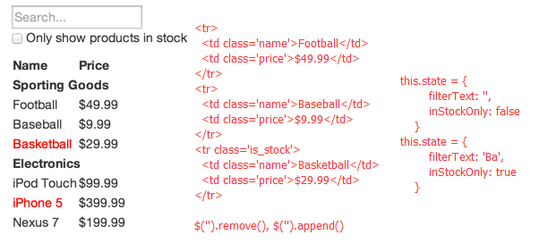
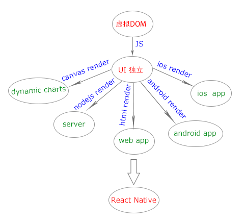

React基础
- 介绍
- react的思维模式
- 伸缩容器 ―「display」的值「flex」与「inline-flex」
- 伸缩项目
- 排序与方向
- 伸缩行
- 伸缩性
- 对齐
介绍
- 传统的web UI都是通过模板或者html指令的方式。
- react没有所谓的模板，仅仅从功能角度出发把UI进行拆分，组合。
- react通过js来render view，推荐JSX
- 传统的UI更新需要知道哪些数据变了，并把变化的数据更新在指定的DOM里，如jquery, angular
- react只需要更新组件的状态
React就是以可组合的方式来构建UI，通过虚拟DOM的方式来更新UI的数据变化
组件化的开发思路
创造性的UI更新方式

<tr>
<td class="name">Football</td>
<td class="price">$49.99</td>
</tr>
<tr>
<td class="name">Baseball</td>
<td class="price">$9.99</td>
</tr>
<tr class="stock">
<td class="name">Basketball</td>
<td class="price">$29.99</td>
</tr>
$('').remove(), $('').append(),,,
this.state = {
filterText: '',
inStockOnly: false
}
this.state = {
filterText: 'Ba',
inStockOnly: true
}
- 组件初始化时调render()，当数据变化后再次调render()，react通过对两次render()返回进行高效的比较，把真正变化的应用到DOM中(见例子1)
- render()返回的既不是字符串也不是DOM node，而是一串轻量级的对DOM应该长什么样的描述(虚拟DOM)
- 引入虚拟DOM，可以很大提高性能，并且具有极大的扩展性

组件的生命周期

- getDefaultProps：获取实例的默认属性，对于组件类来说只调用一次，可以在所有实例中共享
- getInitialState：获取每个实例的初始化状态，可访问组件的 props，每个组件实例来讲都会调用，并且只调一次（只存在组件的内部，每个实例自己维护）
- componentWillMount：组件即将被装载、渲染到页面上（render之前最好一次修改状态的机会）
- render：该方法会创建一个虚拟DOM
- 1. 只能通过 this.props 和 this.state 访问数据（不能修改）
- 2. 可以返回 null,false 或者任何React组件
- 3. 只能出现一个顶级组件，不能返回一组元素
- 4. 不能改变组件的状态
- 5. 不能修改DOM的输出
- componentDidMount：真实DOM已被渲染，可以用ReactDOM.findDOMNode()访问到真实的DOM
- componentWillReceiveProps：组件将要接收到属性的时候调用，在父组件修改真正发生之前,可以修改属性和状态
- shouldComponentUpdate：组件接受到新属性或者新状态的时候，可以返回false来阻止组件的重新渲染
- componentWillUpdate：在组件接收到了新的 props 或者 state 即将进行重新渲染前被调用，不能更新 props 或者 state
- componentDidUpdate：在组件重新被渲染之后会被调用，可以访问并修改 DOM。
初始化阶段
存在期
- componentWillReceiveProps：组件真正删除之前调用，需要开发者来销毁，如创建的定时器或事件监听器
- 见例子2
销毁时
| 生命周期 | 调用次数 | 能否使用 setSate() |
| getDefaultProps | 1(全局调用一次) | 否 |
| getInitialState | 1 | 否 |
| componentWillMount | 1 | 是 |
| render | >=1 | 否 |
| componentDidMount | 1 | 是 |
| componentWillReceiveProps | >=0 | 是 |
| shouldComponentUpdate | >=0 | 否 |
| componentWillUpdate | >=0 | 否 |
| componentDidUpdate | >=0 | 否 |
| componentWillUnmount | 1 | 否 |
react思想流程
[
{category: "Sporting Goods", price: "$49.99", stocked: true, name: "Football"},
{category: "Sporting Goods", price: "$9.99", stocked: true, name: "Baseball"},
{category: "Sporting Goods", price: "$29.99", stocked: false, name: "Basketball"},
{category: "Electronics", price: "$99.99", stocked: true, name: "iPod Touch"},
{category: "Electronics", price: "$399.99", stocked: false, name: "iPhone 5"},
{category: "Electronics", price: "$199.99", stocked: true, name: "Nexus 7"}
];
-
(1) 把UI划分成有继承关系的组件: 一个组件只做一件事儿

FilterableProductTable (包含整个UI box) SearchBar (处理所有用户的输入值) ProductTable (根据用户输入值过滤并展示列表) ProductCategoryRow (展示每类商品的类别) ProductRow (展示每类商品的列表)
-
(2) 用props传递数据并创建静态模板
var ProductCategoryRow = React.createClass({ render: function() { return (<tr><th colSpan="2">{ this.props.category }</th></tr>); } });
var ProductRow = React.createClass({
render: function() {
var name = this.props.product.stocked ?
this.props.product.name :<span style={{color: 'red'}}>{this.props.product.name}</span>;
return (
<tr><td>{name}</td><td>{this.props.product.price}</td></tr>
);
}
});
var ProductTable = React.createClass({
render: function() {
var rows = [];var lastCategory = null;
this.props.products.forEach(function(product) {
if (product.category !== lastCategory) {
rows.push(<ProductCategoryRow category={product.category} key={product.category} />);
}
rows.push(<ProductRow product={product} key={product.name} />);
lastCategory = product.category;
});
return (
<table>
<thead><tr><th>Name</th><th>Price</th></tr></thead>
<tbody>{rows}</tbody>
</table>
);
}
});
var SearchBar = React.createClass({
render: function() {
return (
<form>
<input type="text" placeholder="Search..." />
<p>
<input type="checkbox" />
{' '}
Only show products in stock
</p>
</form>
);
}
});
var FilterableProductTable = React.createClass({
render: function() {
return (
<div>
<SearchBar />
<ProductTable products={this.props.products} />
</div>
);
}
});
var PRODUCTS = [
{category: 'Sporting Goods', price: '$49.99', stocked: true, name: 'Football'},
{category: 'Sporting Goods', price: '$9.99', stocked: true, name: 'Baseball'},
{category: 'Sporting Goods', price: '$29.99', stocked: false, name: 'Basketball'},
{category: 'Electronics', price: '$99.99', stocked: true, name: 'iPod Touch'},
{category: 'Electronics', price: '$399.99', stocked: false, name: 'iPhone 5'},
{category: 'Electronics', price: '$199.99', stocked: true, name: 'Nexus 7'}
];
ReactDOM.render(
<FilterableProductTable products={PRODUCTS} />,
document.getElementById('container')
);
(2) 确定哪些UI是state，哪个组件拥有这个state
state: 用户输入的搜索文本 和 复选框的值
组件: FilterableProductTable
确定state属于哪个组件步骤：
- 找出哪些组件基于state变换：ProductTable 需要基于 state 过滤产品列表，SearchBar 需要显示搜索文本和复选框状态
- 找出共同的祖先组件：FilterableProductTable
- 要么是共同的祖先组件，要么是另外一个在组件树中位于更高层级的组件应该拥有这个 state
- 如果找不出拥有这个 state 数据模型的合适的组件，创建一个新的组件来维护这个 state ，然后添加到组件树中，层级位于所有共同拥有者组件的上面
-
var FilterableProductTable = React.createClass({ getInitialState: function() { return { filterText: '', inStockOnly: false }; }, render: function() { return ( <div> <SearchBar filterText={this.state.filterText} inStockOnly={this.state.inStockOnly} /> <ProductTable products={this.props.products} filterText={this.state.filterText} inStockOnly={this.state.inStockOnly} /> </div> ); } });
var ProductTable = React.createClass({
render: function() {
var rows = [];
var lastCategory = null;
this.props.products.forEach(function(product) {
if ( product.name.indexOf(this.props.filterText) === -1 ||
(!product.stocked && this.props.inStockOnly)
){
return;
}
if (product.category !== lastCategory) {
rows.push(
(3) 添加反向数据流
var SearchBar = React.createClass({
handleChange: function() {
this.props.onUserInput(
this.refs.filterTextInput.value,
this.refs.inStockOnlyInput.checked
);
},
render: function() {
return (
<form>
<input
type="text"
placeholder="Search..."
value={this.props.filterText}
ref="filterTextInput"
onChange={this.handleChange}
/><p>
<input
type="checkbox"
checked={this.props.inStockOnly}
ref="inStockOnlyInput"
onChange={this.handleChange}
/>{' '}Only show products in stock</p>
</form>
);
}
});